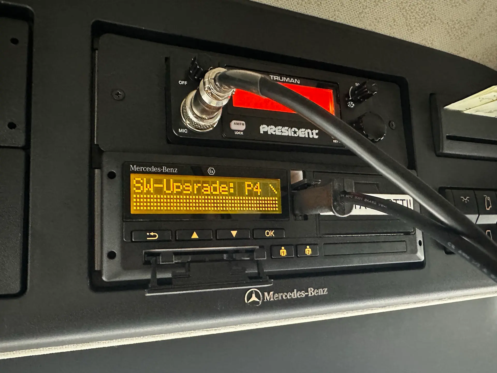

Älypiirtureiden vaatimukset 2026: Karttapäivitykset ja pakettiautojen piirturipakko

Älypiirturin ajantasaisuus on tärkeä osa kaluston ylläpitoa. Kartta- ja ohjelmistopäivitysten lisäksi vuonna 2026 on syytä huomioida kevyiden tavara-ajoneuvojen uusi piirturivaatimus kansainvälisessä liikenteessä.
Karttapäivitykset tukevat rajanylitysten tallennusta
Toisen sukupolven toisen version älypiirturit eli Gen2V2-piirturit tallentavat valtioiden rajanylityksiä automaattisesti. Esimerkiksi VDO DTCO 4.1 hyödyntää tunnistuksessa satelliittipaikannusta ja laitteen sisäistä digitaalista karttaa.
Laitteen kartta- ja ohjelmistoversioiden ajantasaisuus on tärkeää tarkistaa valmistajan ohjeiden mukaisesti. VDO:n mukaan pakolliset ohjelmistopäivitykset tulee tehdä viimeistään seuraavan määräaikaistarkastuksen yhteydessä. Oman laitteen päivitystarve kannattaa selvittää piirturikorjaamolta.
Tarvittavat päivitykset voidaan suunnitella esimerkiksi kaksivuotistarkastuksen ja kalibroinnin yhteyteen. Korjaamolla tarkistetaan laitteen versio ja siihen soveltuvat päivitykset.
Pakettiautojen piirturivaatimus laajenee 1.7.2026
EU:n liikkuvuuspaketin myötä ajo- ja lepoaikasääntely sekä ajopiirturivaatimus laajenevat 1.7.2026 kansainvälisessä tavaraliikenteessä myös ajoneuvoihin ja ajoneuvoyhdistelmiin, joiden suurin sallittu kokonaismassa on yli 2,5 tonnia mutta enintään 3,5 tonnia.
Sääntelyn piiriin kuuluvassa ajoneuvossa on käytettävä Gen2V2-älypiirturia. Massarajaa arvioitaessa huomioidaan myös perävaunu. Kyse ei siis ole pelkästään pakettiauton omasta massasta tai yksittäisen matkan kuorman painosta.
Sääntelyyn liittyy poikkeuksia, joten velvollisuus tulee arvioida oman kuljetustoiminnan perusteella. Pelkästään kotimaan liikenteessä käytettävään 2,5–3,5 tonnin kalustoon tämä kansainvälisen liikenteen laajennus ei sellaisenaan tuo piirturipakkoa.
Jos muutos koskee kalustoasi, varaa asennus hyvissä ajoin ennen heinäkuun määräaikaa.
Ovatko kalustosi piirturit ja päivitykset ajan tasalla?
Me Pitek Oy:llä hoidamme VDO- ja Stoneridge-piirtureiden asennukset, 2-vuotiskalibroinnit sekä kartta- ja ohjelmistopäivitykset ammattitaidolla. Ota yhteyttä, niin selvitetään kalustosi tarpeet.
Ota yhteyttä